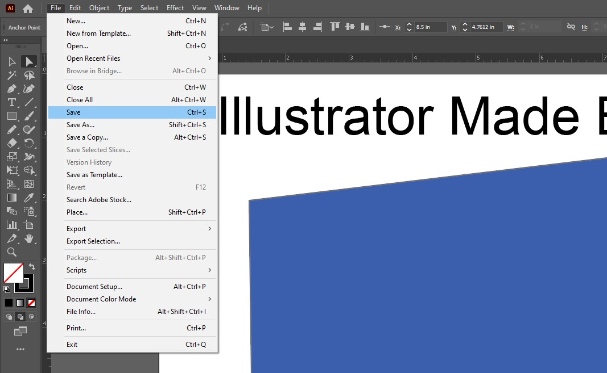
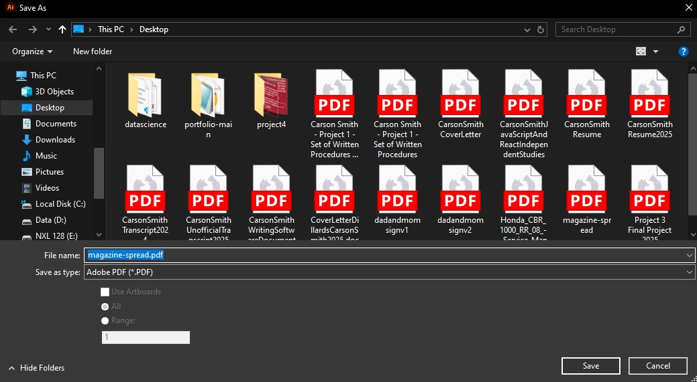

Exporting Your Work
Why This Matters
Your magazine spread is ready to go. Now it’s time to save it in a format that works for your goals. Whether you're printing or sharing online, exporting correctly makes sure your work looks exactly how you designed it.
Step 1: Save the AI File First
Go to File > Save As and choose Adobe Illustrator (AI) as the format. This file keeps all your layers and editable content, so you can come back and make changes later.
Name your file something clear like “MagazineSpread.ai” and choose a folder you’ll remember.
File > Save Highlighted.
Step 2: Export (Save) for Print
Go to File > Save As. Choose “PDF” from the dropdown. PDFs are perfect for print and keep your quality intact. It is important to note that you can only "Save As" a PDF, you cannot export a PDF.
Make sure “Use Artboards” is checked if you only want to export your spread without any extra canvas space. In the next dialog, choose High Quality Print and make sure the color mode is CMYK.
Save As settings for PDF with Use Artboards checked.
Step 3: Export for Web or Digital Viewing
If you’re posting online, exporting as a PNG or JPEG is better. Go to File > Export > Export As and choose PNG or JPEG. For resolution, set it to 150 or 300 PPI if you want it to look sharp.
You can also use “Save for Web” for more control over file size and transparency.
Step 4: Check Your File
Before you close Illustrator, open your exported file to double-check everything. Make sure colors look right, nothing is cut off, and the text is readable.
Project Complete!!! 🎉
You’ve built a full magazine spread from scratch using Illustrator. You’ve learned how to structure layouts, style text, manage layers, draw your own graphics, and export your final product.
While we used a magazine layout as a template to learn the tools, these techniques can be applied to virtually any kind of design. Whether you're creating posters, brochures, web graphics, or custom artwork, the skills you practiced here will carry over into all your future Illustrator projects. Keep exploring, experimenting, and designing! This is just the beginning. Good Luck out there! (Not that you need it ;) )